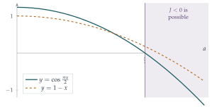

Let \[I = \int_0^1 \bigl((y')^2 - y^2\bigr)\,\mathrm{d}x \qquad\text{and}\qquad I_1 = \int_0^1 (y' + y\tan x)^2\,\mathrm{d}x,\] where \(y\) is a given function of \(x\) satisfying \(y = 0\) at \(x = 1\). Show that \(I - I_1 = 0\) and deduce that \(I \geq 0\). Show further that \(I = 0\) only if \(y = 0\) for all \(x\) (\(0 \leq x \leq 1\)).
Let \[J = \int_0^1 \bigl((y')^2 - a^2y^2\bigr)\,\mathrm{d}x,\] where \(a\) is a given positive constant and \(y\) is a given function of \(x\), not identically zero, satisfying \(y = 0\) at \(x = 1\). By considering an integral of the form \[\int_0^1 (y' + ay\tan bx)^2\,\mathrm{d}x,\] where \(b\) is suitably chosen, show that \(J \geq 0\). You should state the range of values of \(a\), in the form \(a < k\), for which your proof is valid.
In the case \(a = k\), find a function \(y\) (not everywhere zero) such that \(J = 0\).
The hook
Most optimisation problems at school ask for the best number: the value of \(x\) that maximises an area, say. The calculus of variations asks for the best function. Which curve between two points does a bead slide down fastest? What shape does a hanging chain take? Which path does light follow through a lens? In each case the quantity to be optimised is an integral, and the unknown is a whole function.
This question studies the simplest interesting example. The integral \(J = \int_0^1 \bigl((y')^2 - a^2y^2\bigr)\,\mathrm{d}x\) balances two competing terms: steepness pushes it up, size pushes it down. For small \(a\), steepness always wins and \(J \geq 0\) for every function. But there is a critical value of \(a\) at which the balance tips, and the question finds it exactly: \(a = \frac\pi2\). Where \(\pi\) comes from will be the story of the section.
Before you start
Why is it not obvious that \(I \geq 0\)? Try \(y = 1 - x\), which satisfies \(y(1) = 0\).
\(I\) is a difference of two positive quantities, so it could have either sign. For \(y = 1 - x\): \(\int_0^1 1\,\mathrm{d}x = 1\) and \(\int_0^1 (1-x)^2\,\mathrm{d}x = \frac13\), so \(I = \frac23 > 0\). But a cleverer function might make \(\int y^2\) larger relative to \(\int (y')^2\). The trick in the question is to write \(I\) as an integral of a square, which is obviously non-negative. This is “completing the square”, for integrals.
Working it through
Stage 1 Completing the square
Expanding the square in \(I_1\): \[I_1 = \int_0^1 \bigl((y')^2 + 2yy'\tan x + y^2\tan^2 x\bigr)\,\mathrm{d}x,\] so \[I - I_1 = -\int_0^1 \bigl(y^2 + y^2\tan^2 x + 2yy'\tan x\bigr)\,\mathrm{d}x = -\int_0^1 \bigl(y^2\sec^2 x + 2yy'\tan x\bigr)\,\mathrm{d}x.\]
The integrand \(y^2\sec^2 x + 2yy'\tan x\) is an exact derivative. Of what?
By the product rule, \(\dfrac{\mathrm{d}}{\mathrm{d}x}\bigl(y^2\tan x\bigr) = 2yy'\tan x + y^2\sec^2 x\). So \[I - I_1 = -\Bigl[y^2\tan x\Bigr]_0^1 = -\bigl(y(1)^2\tan 1 - y(0)^2\tan 0\bigr) = 0,\] because \(y(1) = 0\) and \(\tan 0 = 0\). So \(I = I_1 \geq 0\), being the integral of a square.■
Stage 2 When is \(I = 0\)?
If the integral of a continuous non-negative function is zero, what can you say about the function? So what equation must \(y\) satisfy if \(I = 0\)?
A continuous non-negative function with zero integral must be identically zero (if it were positive at one point, it would be positive on a small interval around it, contributing a positive amount). So \(I = 0\) forces \(y' + y\tan x = 0\) on \([0, 1]\). Multiplying by \(\sec x\), this says \(\frac{\mathrm{d}}{\mathrm{d}x}\left(\frac{y}{\cos x}\right) = \frac{y'\cos x + y\sin x}{\cos^2 x} = 0\), so \(y = C\cos x\). Then \(y(1) = C\cos 1 = 0\), and since \(\cos 1 \neq 0\), \(C = 0\). So \(I = 0\) only if \(y \equiv 0\).■
Stage 3 The general case
Repeat Stage 1 with \(\int_0^1 (y' + ay\tan bx)^2\,\mathrm{d}x\). What must \(b\) be for the leftover terms to form an exact derivative?
Call this integral \(K\). Then \[\begin{aligned} J - K &= -\int_0^1 \bigl(a^2y^2 + a^2y^2\tan^2 bx + 2ayy'\tan bx\bigr)\,\mathrm{d}x \\ &= -\int_0^1 \bigl(a^2y^2\sec^2 bx + 2ayy'\tan bx\bigr)\,\mathrm{d}x. \end{aligned}\] On the other hand \(\frac{\mathrm{d}}{\mathrm{d}x}\bigl(ay^2\tan bx\bigr) = 2ayy'\tan bx + ab\,y^2\sec^2 bx\). These match exactly when \(ab = a^2\), that is, \(b = a\). Then \[J - K = -\Bigl[ay^2\tan ax\Bigr]_0^1 = -a\,y(1)^2\tan a = 0,\] so \(J = K \geq 0\).
Where can this argument break down? (Look at \(\tan ax\) on the interval \(0 \leq x \leq 1\).)
The argument needs \(\tan ax\) to be defined and continuous for all \(x\) in \([0, 1]\); otherwise \(K\) might not exist and the fundamental theorem of calculus cannot be applied. As \(x\) runs over \([0, 1]\), \(ax\) runs over \([0, a]\), and \(\tan\) is continuous there exactly when \(a < \frac\pi2\). So the proof is valid for \[a < k = \frac\pi2. \qed\]
Stage 4 The critical case
When \(a = \frac\pi2\), the proof fails. In Stage 2, the function making \(I = 0\) would have satisfied \(y' + y\tan x = 0\). What is the analogous equation now, and what are its solutions?
The analogue is \(y' + ay\tan ax = 0\), whose solutions are \(y = C\cos ax\). With \(a = \frac\pi2\), \(y = \cos\frac{\pi x}{2}\) satisfies \(y(1) = \cos\frac\pi2 = 0\). Check directly: \[\begin{aligned} J &= \frac{\pi^2}{4}\int_0^1 \left(\sin^2\frac{\pi x}{2} - \cos^2\frac{\pi x}{2}\right)\mathrm{d}x = -\frac{\pi^2}{4}\int_0^1 \cos\pi x\,\mathrm{d}x \\ &= -\frac{\pi^2}{4}\left[\frac{\sin\pi x}{\pi}\right]_0^1 = 0. \qed \end{aligned}\] So at the critical value, a non-zero function makes \(J\) exactly zero.
Looking back
Completing the square in an integral. Adding and subtracting an exact derivative turned \(J\) into the integral of a square plus a boundary term that vanished.
Check where the tools fail. The method worked only while \(\tan ax\) stayed finite on the interval. The point where it failed, \(a = \frac\pi2\), was exactly the critical value.
The extreme case solves a differential equation. The function giving \(J = 0\) came from the first-order equation \(y' + ay\tan ax = 0\), and it also satisfies \(y'' + a^2y = 0\).
What’s really going on
In 1696 Johann Bernoulli challenged the mathematicians of Europe: find the curve down which a bead slides from one point to another in the least time. Solutions came from Newton (anonymously, overnight; Bernoulli said he recognised “the lion by his claw”), Leibniz, l’Hôpital and Jakob Bernoulli. The answer is a cycloid. In the 1750s Euler and the young Joseph-Louis Lagrange turned these special tricks into a general method: if \(y\) makes \(\int F(x, y, y')\,\mathrm{d}x\) stationary, then \(y\) satisfies the Euler–Lagrange equation \[\frac{\mathrm{d}}{\mathrm{d}x}\frac{\partial F}{\partial y'} = \frac{\partial F}{\partial y}.\] For our \(J\), \(F = (y')^2 - a^2y^2\), and the Euler–Lagrange equation is \(y'' + a^2y = 0\): simple harmonic motion.
Why \(\pi/2\)?
For \(a < \frac\pi2\), \(J\) has a minimum value of \(0\), achieved only by \(y \equiv 0\). At \(a = \frac\pi2\) the minimum is still \(0\) but a second function achieves it. For \(a > \frac\pi2\), the same function \(y = \cos\frac{\pi x}{2}\) gives \[J = \frac{\pi^2}{8} - \frac{a^2}{2} < 0,\] and by scaling \(y\) up, \(J\) can be made as negative as you like: there is no minimum at all (Figure 4.7.1). The critical value is the first \(a\) for which \(y'' + a^2y = 0\) has a non-zero solution satisfying the boundary conditions (\(y(1) = 0\), and a “natural” condition \(y'(0) = 0\) at the free end). That is an eigenvalue problem, and \(a^2 = \frac{\pi^2}{4}\) is its smallest eigenvalue. Compare Section 3.7, where pinning the function at both ends of an interval of length \(\pi\) gave critical value \(1\); here the interval has length \(1\) and only one end is pinned, which is like half of an interval of length \(2\), so the critical \(a\) is \(\frac{\pi}{2}\).

Physics and the principle of least action
The calculus of variations turned out to describe nature itself. In the eighteenth and nineteenth centuries it emerged that the laws of motion can be stated as: a mechanical system moves so as to make an integral called the action stationary. Light, similarly, travels along the path of least time (Fermat’s principle), which explains refraction. In the twentieth century the same idea became the foundation of quantum mechanics, through Richard Feynman’s “sum over paths”. The quadratic integrals in this question are the simplest examples, and the eigenvalue problem they lead to reappears as the energy levels of a quantum oscillator in Section 8.6.
The thinking skill
To show a quadratic expression is non-negative, write it as a square plus something you can control. For integrals, the “something” is often an exact derivative, which integrates to boundary terms.
And always ask where the method stops working. The point of failure here was not an accident; it was the most important number in the problem.
Try this next
Beyond the critical value. Show that if \(a > \frac\pi2\) then \(y = \cos\frac{\pi x}{2}\) gives \(J < 0\).
The Euler–Lagrange equation. harder Suppose \(y\) minimises \(J\) among functions with \(y(1) = 0\). For any function \(\eta\) with \(\eta(1) = 0\) and any number \(\varepsilon\), \(J(y + \varepsilon\eta) \geq J(y)\). Expand \(J(y + \varepsilon\eta)\) in powers of \(\varepsilon\) and deduce that \(\int_0^1 (y'\eta' - a^2y\eta)\,\mathrm{d}x = 0\). Integrate by parts to show that \(y'' + a^2y = 0\) and \(y'(0) = 0\) (assuming \(y\) is smooth enough).
A longer interval. Show by a substitution that if \(y(L) = 0\), then \(\int_0^L \bigl((y')^2 - a^2y^2\bigr)\,\mathrm{d}x \geq 0\) for all \(y\) exactly when \(a \leq \frac{\pi}{2L}\), and that a non-zero \(y\) gives equality only when \(a = \frac{\pi}{2L}\).
The cycloid. Look up the brachistochrone problem and find the parametric equations of the cycloid. Show that a bead released from rest anywhere on an upside-down cycloid reaches the bottom in the same time (the tautochrone property, found by Huygens in 1659).
Further reading
Paul Nahin, When Least Is Best (Princeton University Press). The history and mathematics of optimisation, including the brachistochrone, written for students.
Richard Feynman, The Feynman Lectures on Physics, Volume II, Chapter 19 (“The principle of least action”). Free online.
Bruce van Brunt, The Calculus of Variations (Springer). An undergraduate textbook; the first chapters need only A-level calculus.